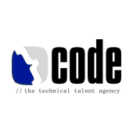
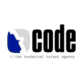

- Black Americans make up only 13% of the US population but 40% of our prison population
- Latino/Hispanic Americans make up only 16% of the US population but 19% of our prison population
Racial and ethnic disparities are a defining characteristic of our criminal justice system.
Our Solution
Justice Reskill works to secure greater opportunity and long-term financial stability for the justice-involved community. With our accessible learning platform and our vibrant network of support, we equip our participants with the resources and environment they need to achieve lasting career success.
Wealth Generation
We set our participants on a course to earn true career-level wages, which are crucial for accumulating the personal and family savings necessary to take on future opportunities and overcome inevitable setbacks.
Community
Community is not a given for many justice-involved individuals; thus, we actively cultivate a sense of belonging for all participants, along with an inclusive professional network that we hope offers lifelong career support.
Future-Focused Skills
Unlike existing learn-to-code platforms, which focus exclusively on technical skills, we also equip our participants with the “soft” skills and knowledge needed to thrive in a technology-related career.
Whole Person Support
To fix the broken journeys of our community, we must eliminate barriers like lack of access, mental health issues, and financial illiteracy. We confront these realities with intentional programming and partnerships focused on strengthening the whole person.
Partners & Supporters
 



Learning Community
Student Application
Community Partners
Contact Us Here
Donate
Open Collective (501c3 Fiscal Sponsor)
Follow Us